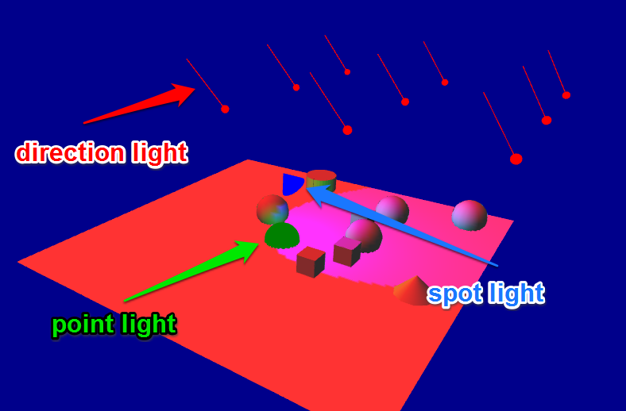

When using opengl display, GAMA provides you the possibility to manipulate one or several lights, making your display more realistic. Most of the following screenshots will be taken with the following short example gaml :
model test_light
grid cells {
aspect base {
draw square(1) at:{grid_x,grid_y} color:#white;
}
}
experiment my_experiment type:gui{
output {
display my_display type:opengl background:#darkblue {
species cells aspect:base;
graphics "my_layer" {
draw square(100) color:#white at:{50,50};
draw cube(5) color:#lightgrey at:{50,30};
draw cube(5) color:#lightgrey at:{30,35};
draw cube(5) color:#lightgrey at:{60,35};
draw sphere(5) color:#lightgrey at:{10,10,2.5};
draw sphere(5) color:#lightgrey at:{20,30,2.5};
draw sphere(5) color:#lightgrey at:{40,30,2.5};
draw sphere(5) color:#lightgrey at:{40,60,2.5};
draw cone3D(5,5) color:#lightgrey at:{55,10,0};
draw cylinder(5,5) color:#lightgrey at:{10,60,0};
}
}
}
}
Before going deep into the code, here is a quick explanation about how light works in opengl. First of all, you need to know that there are 3 types of lights you can manipulate : the ambient light, the diffuse light and the specular light. Each “light” in opengl is in fact composed of those 3 types of lights.
The ambient light is the light of your world without any lighting. If a face of a cube is not stricken by the light rays for instance, this face will appear totally black if there is no ambient light. To make your world more realistic, it is better to have an ambient light. An ambient light has then no position or direction. It is equally distributed to all the objects of your scene.
Here is an example of our GAML scene using only ambient light (color red) :
The diffuse light can be seen as the light rays : if a face of a cube is stricken by the diffuse light, it will take the color of this diffuse light. You have to know that the more perpendicular the face of your object will be to the light ray, the more lightened the face will be.
A diffuse light has then a direction. It can have also a position. Your have 2 categories of diffuse light : the positional lights, and the directional lights.
Those lights have a position in your world. It is the case of point lights and spot lights.
Points lights can be seen as a candle in your world, diffusing the light equally in all the direction.
Here is an example of our GAML scene using only diffuse light, with a point light (color red, the light source is displayed as a red sphere) :
Spot lights can be seen as a torch light in your world. It needs a position, and also a direction and an angle.
Here is an example of our GAML scene using only diffusion light, with a spot light (color red, the light source is displayed as a red cone) :

Positional lights, as they have a position, can also have an attenuation according to the distance between the light source and the object. The value of positional lights are computed with the following formula : diffuse_light = diffuse_light * ( 1 / (1 + constante_attenuation + linear_attenuation * d + quadratic_attenuation * d)) By changing those 3 values (constante_attenuation, linear_attenuation and quadratic_attenuation), you can control the way light is diffused over your world (if your world is “foggy” for instance, you may turn your linear and quadratic attenuation on). Note that by default, all those attenuation are equal to 0.
Here is an example of our GAML scene using only diffusion light, with a point light with linear attenuation (color red, the light source is displayed as a red sphere) :
Directional lights have no real “position” : they only have a direction. A directional light will strike all the objects of your world with the same direction. An example of directional light you have in the real world would be the light of the sun : the sun is so far away from us that you can consider that the rays have the same direction and the same intensity wherever they strike. Since there is no position for directional lights, there is no attenuation either.
Here is an example of our GAML scene using only diffusion light, with a directional light (color red) :
This is a more advanced concept, giving an aspect a little bit “shinny” to the objects stricken by the specular light. It is used to simulate the interaction between the light and a special material (ex : wood, steel, rubber…). This specular light is not implemented yet in gama, only the two others are.
In your opengl display, without specifying any light, you will have only one light, with those following properties :
Those values have been chosen in order to have the same visual effect in both opengl and java2D displays, when you display 2D objects, and also to have a nice “3D effect” when using the opengl displays. We chose the following setting by default :
Here is an example of our GAML scene using the default light :
In your opengl display, you can create up to 8 lights, giving them the properties you want.
In order to keep it simple, the ambient light can be set directly when you are declaring your display, through the facet ambient_light. You will have one only ambient light.
experiment my_experiment type:gui {
output {
display "my_display" type:opengl ambient_light:100 {
}
}
}
Note for developers : Note that this ambient light is set to the GL_LIGHT0. This GL_LIGHT0 only contains an ambient light, and no either diffuse nor specular light.
In order to add lights, or modifying the existing lights, you can use the statement light, inside your display scope :
experiment my_experiment type:gui {
output {
display "my_display" type:opengl {
light id:0;
}
}
}
This statement has just one non-optional facet : the facet “id”. Through this facet, you can specify which light you want. You can control 7 lights, through an integer value between 1 and 7.
Once you are manipulating a light through the light statement, the light is turned on. To switch off the light, you have to add the facet active, and turn it to false.
The light you are declaring through the light statement is in fact a “diffuse” light. You can specify the color of the diffuse light through the facet color (by default, the color will be turn to white).
An other very important facet is the type facet. This facet accepts a value among direction, point and spot.
A direction light, as explained in the first part, is a light without any position. Instead of the facet position, you will use the facet direction, giving a 3D vector.
Example of implementation :
light id:1 type:direction direction:{1,1,1} color:rgb(255,0,0);
A point light will need a facet position, in order to give the position of the light source.
Example of implementation of a basic point light :
light id:1 type:point position:{10,20,10} color:rgb(255,0,0);
You can add, if you want, a custom attenuation of the light, through the facets linear_attenuation or quadratic_attenuation.
Example of implementation of a point light with attenuation :
light id:1 type:point position:{10,20,10} color:rgb(255,0,0) linear_attenuation:0.1;
A spot light will need the facet position (a spot light is a positionnal light) and the facet direction. A spot light will also need a special facet spot_angle to determine the angle of the spot (by default, this value is set to 45 degree).
Example of implementation of a basic spot light :
light id:1 type:spot position:{0,0,10} direction:{1,1,1} color:rgb(255,0,0) spot_angle:20;
Same as for point light, you can specify an attenuation for a spot light.
Example of implementation of a spot light with attenuation :
light id:1 type:spot position:{0,0,10} direction:{1,1,1} color:rgb(255,0,0) spot_angle:20;
Note that when you are working with lights, you can display your lights through the facet draw light to help you implementing your model. The three types of lights are displayed differently :

Note for developers : Note that, since the GL_LIGHT0 is already reserved for the ambient light (only !), all the other lights (from 1 to 7) are the lights from GL_LIGHT1 to GL_LIGHT7.
| //: # (endConcept | light) |